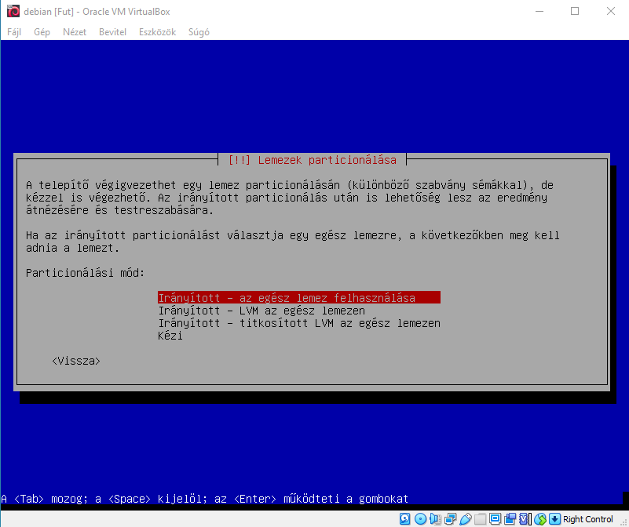
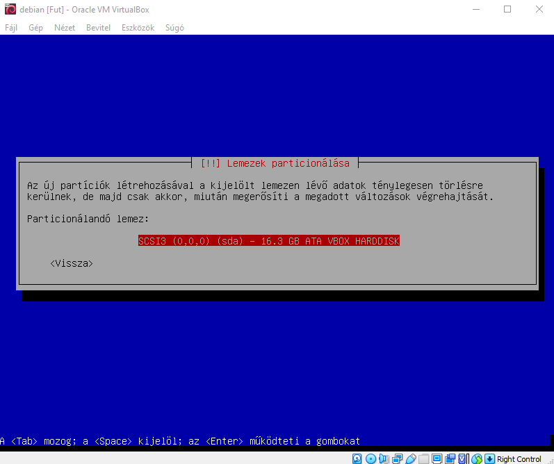
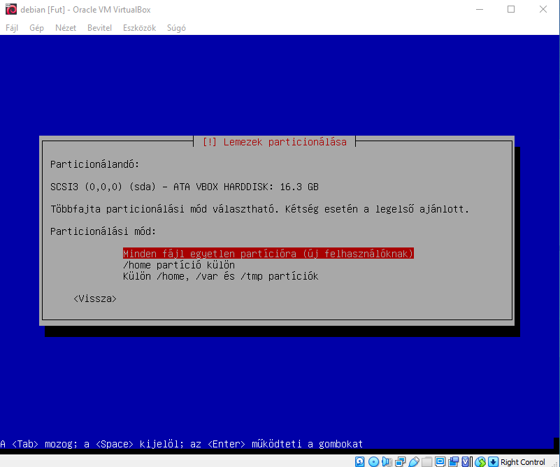
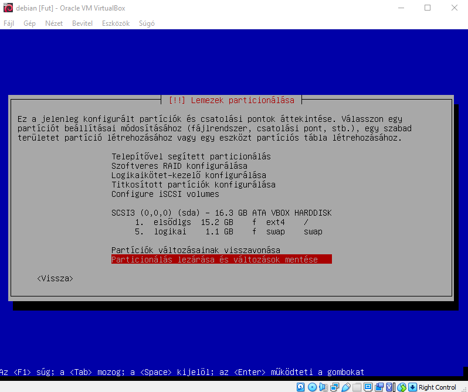

Amint azt alapvető beállításokat elvégeztük, így most jön a patrícionálás. Itt válasszuk ki, hogy hogyan szeretnénk partícionálni, mi most a legkönyebb és legegyszerűbb megoldást választottuk, hogy egy partícióra megy az egész rendszer. Majd a partionálást követően véglegesítsük azt, így elkezdődik az Alaprendszer feltelepítése.



